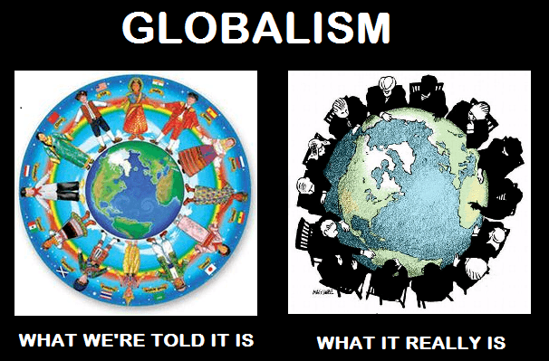

The Book of Mormon came from Joseph Smith’s translation of the Golden Plates—or his very fertile imagination, take your pick. Some characters resemble today’s globalists, so either history repeats itself or life imitates art. I’m technically Mormon, but a really lousy one for unbelief and high beer intake. Still, I’ll liven up the book that Mark Twain called “chloroform in print”.
What is globalism?

Globalists want to unite the world. In practice, this means free trade, profiteering from social engineering, and even population replacement policies.
They seek to abolish borders, as impediments to corporate profits. The first step is transferring sovereignty piecemeal from democratic nations to transnational authorities. Later, regional superstructures are to be established—having little accountability to the public—like the European Union. Early on, Leon Trotsky proposed the same for the entire Western Hemisphere, after being exiled from the USSR for being too leftist.
Afterward, things may converge further yet into a one-world government.
Bill Clinton and Zeezrom
Besides The Lightworker, Bill Clinton was the awesomest POTUS ever, though Hillary is the true brains of the operation. He loves to grab burgers by the buns—then chews slowly, because he doesn’t inhale. Lately he’s slimmed down, as Cupcake is beside to remind him, “No snacking, Bill!”
Chubby Bubba signed the NAFTA treaty during his first year. The American manufacturing sector didn’t thrive as predicted, but who needs factories, right? At least big box stores full of imported goods and fast food joints are still hiring.
Book of Mormon connection:
Zeezrom was a slick lawyer well-skilled in word games:
Now the object of these lawyers was to get gain; and they got gain according to their employ.
—Alma 8:22
Okay, that’s obvious. He began as an all-around shmuck, though happily he saw the light in the end.
Most federal politicians are ascended lawyers, like Slick Willie. (“It depends on what the meaning of ‘is’ is” was pure lawyerly brilliance!) Although attorneys know how the law works, making them politicians is like foxes guarding the henhouse.
George Soros and Amalickiah
This high-rolling currency speculator commands such immense funding that he can short-sell a country’s currency straight to hell. By pressing a few buttons at the right time, he can profit a tidy sum that would take a truck driver or machinist hundreds of lifetimes to earn. Not bad for a hard day’s work!
Still, Georgie has a heart, making large donations to philanthropy. The Open Society Foundation funds numerous causes promoting “peace and progress” throughout the world.
Book of Mormon connection:
It begins like this:
And Amalickiah was desirous to be a king; and those people who were wroth were also desirous that he should be their king; and they were the greater part of them the lower judges of the land, and they were seeking for power.
And they had been led by the flatteries of Amalickiah, that if they would support him and establish him to be their king that he would make them rulers over the people.
—Alma 46:4-5
When his power grab among the Nephites failed, he jumped ship for the rival Lamanites. Their king said, “Sure, dude, we’ll make you our general.” Then he promptly sold out to a rebel faction. After surrendering the army, he whacked both the rebel leader and the Lamanite king. (Never trust a turncoat.) Then he tried to take over the Nephites again, but his luck ran out.
So here’s a hyper-ambitious fellow, skilled at playing both halves against the middle—sounds familiar…
David Rockefeller and King Akish
Life was kind for the grandson of oil magnate John D. Rockefeller. American soldiers endured battles like Anzio, Tarawa, and Normandy, but this rich kid was a pogue. David’s cushy Army intelligence officer gig got him valuable contacts along the way. Beginning in 1946, he worked for Chase National Bank (now JPMC) eventually becoming CEO in 1969.
In 1949, David became a Council on Foreign Relations director—not bad for a rookie bankster! He also became heavily involved in the Bilderberg Group. However, two interesting clubs weren’t enough, so he founded the Trilateral Commission, along with having his fingers in several other international institutions.
Mr. NWO and some of his buddies at Goldman-Sachs created Republicans Who Care, a foundation backing moderate conservative candidates. Other than that, his family donated the land for the United Nations building, our wannabe one-world government.
Book of Mormon connection:
Prince Jared deposed his father, got deposed himself, and—with his equally rotten son-in-law Akish’s help—deposed Dad again. Then:
For so great had been the spreading of this wicked and secret society that it had corrupted the hearts of all the people; therefore Jared was murdered upon his throne, and Akish reigned in his stead.
—Ether 9:6
Then more cyclic history happened, etc. A secret combination (secret society) enabled Jared’s temporary comeback, and for Akish to double-cross him.
And it came to pass that they formed a secret combination, even as they of old; which combination is most abominable and wicked above all, in the sight of God;
—Ether 8:18
Ether 8:22-25 has even better stuff. Quite interestingly, Granddaddy J.D. said:
The day of combination is here to stay. Individualism has gone, never to return.
He meant monopoly power. However, grandson David apparently expanded the concept toward some interesting directions.
Angela Merkel and King Moron
Merkel began as an official in the Agitation and Propaganda department of East Germany’s “Freie Deutsche Jugend”. When reunification was nigh, apparently she switched sides. In just sixteen years, this virtually unknown newcomer became Germany’s Chancellor—not bad! Earlier, this Manchurian East German candidate said that diversity doesn’t work. Later, her greatest accomplishment has been bringing cultural enrichment to her country.
Her buddy Suckerberg is removing criticism from the world’s largest social media platform. Her government prioritizes arresting online dissenters, like those criticizing immigration policies. Meanwhile, the police can’t keep the public safe from all the new vibrancy. Some suspect migrants are intended as a destabilizing force. Either way, Merkel’s reckless policies might eventually make Germany ungovernable.
Book of Mormon connection:
The Book of Ether 9:14-18 describes an inept King who got punked by conspirators:
…Moron did that which was wicked before the Lord.
And it came to pass that there arose a rebellion among the people, because of that secret combination which was built up to get power and gain; and there arose a mighty man among them in iniquity, and gave battle unto Moron, in which he did overthrow the half of the kingdom; and he did maintain the half of the kingdom for many years.
Moron regains control of the situation, then is jailed after a palace coup, and begets Coriantor. Apparently he got conjugal visits. Still, morons shouldn’t breed, or rule countries.
Richard Coudenhove-Kalergi and Korihor
Count Richard Nikolaus Eijiro von Coudenhove-Kalergi was born of an Austrian diplomat and a Japanese mother disowned for marrying a gaijin. He was brought as an infant to a small town in central Europe. Quite likely, his background made it difficult to fit in as he grew up. Perhaps if he’d been raised in today’s California around Eurasians he could relate to, it might have been better (or maybe not).
To resolve his personal angst, he sought to remake the world in his image. As a young adult, he received an enormous inheritance. He became a professional activist, gathering a dizzying array of contacts with European leaders, as well as banking magnates quite interested in his efforts.
His activities eventually spurred the establishment of the European Union, but it doesn’t end there. He conceived of the future as being without genetically distinct groups, run through the multicultural blender set on puree. He didn’t merely say it would just happen; he wrote quite enthusiastically about that. Apparently Europe in particular was too White and delightsome!
According to his book Praktischer Idealismus, the spiritual nobility of cultures would still carry on after their genotypes were eradicated. Baloney; this would annihilate every distinct society. The world’s remaining cultural heritage would be junk food, shopping, pop music, and TV.
Also, he pledged the spiritual leadership of Europe to some religion or another, writing worshipfully about them. (Nope, not the Mormons.)
Book of Mormon connection:
Korihor was an Antichrist figure advocating atheism and (more generally) moral relativism. To the pious people, this “question everything” stuff rocked their civilization to the foundations:
And thus he did preach unto them, leading away the hearts of many, causing them to lift up their heads in their wickedness, yea, leading away many women, and also men, to commit whoredoms—telling them that when a man was dead, that was the end thereof.
—Alma 20:18
In modern times, this “up is down, right is sideways” obfuscation is socially corrosive. Just as cultural Marxism and suicidalism are destructive by design, Coudenhove-Kalergi’s globalism is an assault on the right of nations to exist as political, genetic, and cultural identities. Anyone of any heritage who values it should oppose globalism.
Read More: You’re Either A Globalist Or A Nationalist